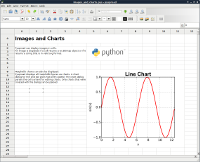

| About |
Pyspread is a non-traditional
spreadsheet application that is based on and written in the
programming language Python. The goal of pyspread is to be the most pythonic spreadsheet. Pyspread expects Python expressions in its grid cells, which makes a spreadsheet specific language obsolete. Each cell returns a Python object that can be accessed from other cells. These objects can represent anything including lists or matrices. Pyspread is free software. It is released under the GPL v3. |
 |
|
|---|---|---|---|
| Features |
|
 |
|
| news |
December 2011:
Pyspread 0.2.0 is out. Get it from here. December 2011: The main site is moving from Sourceforge to github. |
||
| Requirements |
Pyspread is designed for Linux
and other GTK platforms. Due to time restrictions, Windows™ support has been discontinued starting with version 0.2.0. If you run Windows, get version 0.1.2 from here. If you would like to maintain a Windows version please contact me. Dependencies Highly recommended for full functionality of the example files |
||
| contact |
mmanns < at > gmx < dot
> net |
Copyright 2008-2011 Martin
Manns
Last changed: 23.
December 2011
{kind=link}
{kind=link}